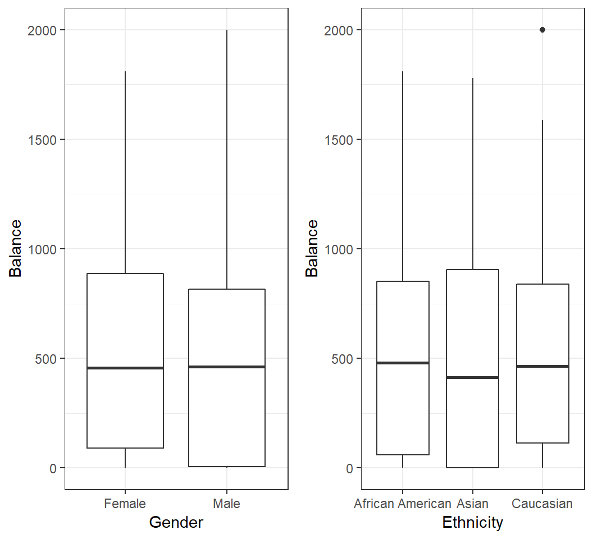
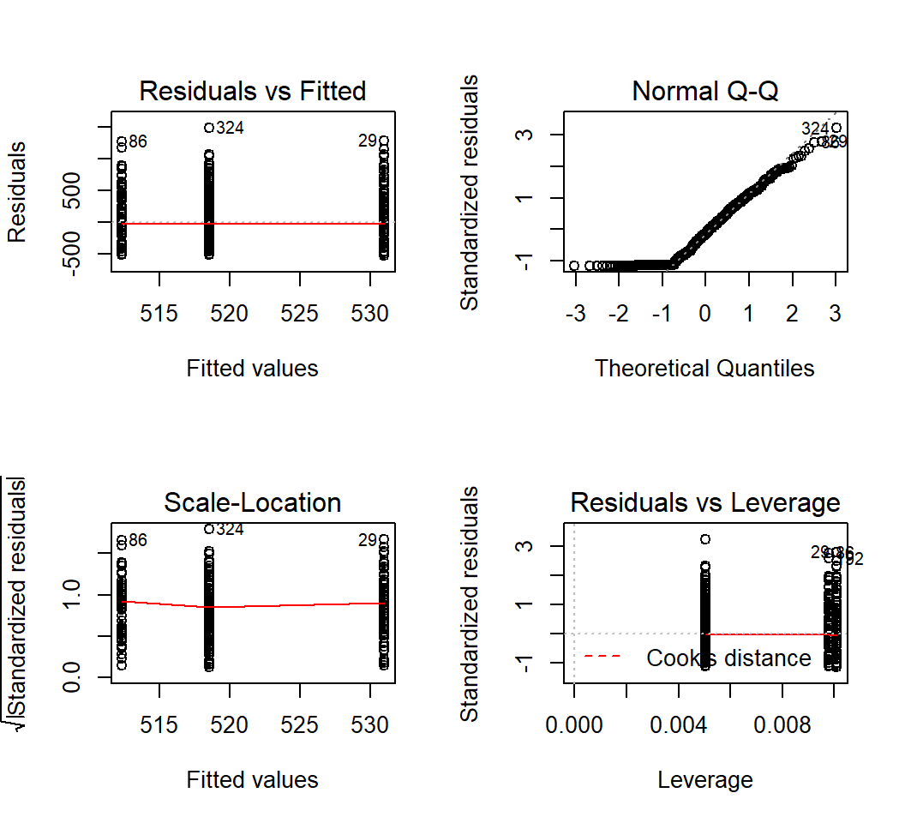
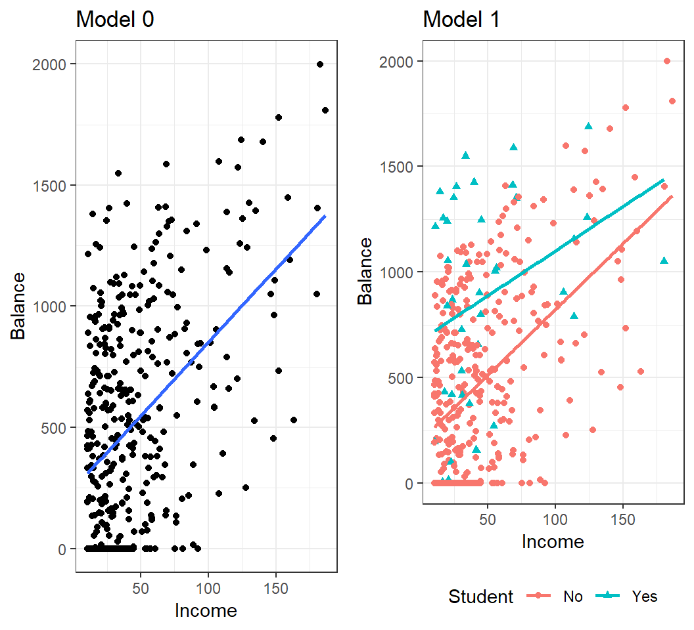
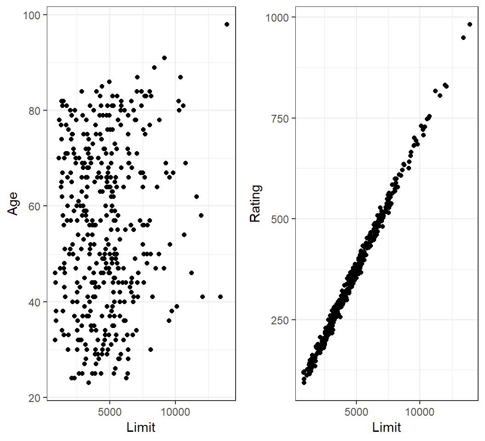

Stat 435 Lecture Notes 3
Xiongzhi Chen
Washington State University

Linear regression with a qualitative predictor
Motivation
How is
Balanceof a credit card related to a user’sGender?How is
Balanceof a credit card related to a user’sEthnicity?
Motivation

Model 1: 2 levels
- Coding:
Genderhas 2 levels,MaleandFemale - dummy variable: \(x_i =0\) if \(i\)th person is
Femaleand \(x_i =1\) if \(i\)th person isMale - Model: \(y_i = \beta_0 + \beta_1 x_i + \varepsilon_i\), which induces 2 submodels:
- \(y_i = \beta_0 + \beta_1 + \varepsilon_i\) if \(i\)th person is
Male - \(y_i = \beta_0 + \varepsilon_i\) if \(i\)th person is
Female
Note: dummy variable follows coding by R, for which the first level Female is the baseline
Model 1: 2 levels
Model: \(y_i = \beta_0 + \beta_1 x_i + \varepsilon_i\)
- \(x_i =0\) if \(i\)th person is
Female, and \(x_i =1\) if \(i\)th person isMale - \(\beta_0\): average
Balancefor females - \(\beta_1\): average difference in balance between males and females
Remark: coding of a dummy variable is arbitrary and should be easily interpretable
Fitting the Model 1
Call:
lm(formula = Balance ~ Gender, data = creditData)
Coefficients:
(Intercept) GenderMale
529.54 -19.73 Females have an averagebalanceof $529.54;FemalebaselineMales have an averagebalanceof $(529.54-19.73)= $509.80
Note: in R, by default the first level Female is the baseline
Testing the Model 1
Call:
lm(formula = Balance ~ Gender, data = creditData)
Residuals:
Min 1Q Median 3Q Max
-529.54 -455.35 -60.17 334.71 1489.20
Coefficients:
Estimate Std. Error t value Pr(>|t|)
(Intercept) 529.54 31.99 16.554 <2e-16 ***
GenderMale -19.73 46.05 -0.429 0.669
---
Signif. codes: 0 '***' 0.001 '**' 0.01 '*' 0.05 '.' 0.1 ' ' 1
Residual standard error: 460.2 on 398 degrees of freedom
Multiple R-squared: 0.0004611, Adjusted R-squared: -0.00205
F-statistic: 0.1836 on 1 and 398 DF, p-value: 0.6685- If model assumptions are met,
Genderis not significant on affecting averagebalanceat type I error level 0.05 based on F-statistic (or the p-value ofGenderMale)
Model 2: 3 levels
Ethnicity has 3 levels African American (1st level and baseline in R), Asian, and Caucasian. 2 dummy variables are needed:
- \(x_{i1} =0\) if \(i\)th person is not
Asian, and \(x_{i1} =1\) if \(i\)th person isAsian - \(x_{i2} =0\) if \(i\)th person is not
Caucasian, and \(x_{i2} =1\) if \(i\)th person isCaucasian - Model: \[y_i = \beta_0 + \beta_1 x_{i1} +\beta_2 x_{i2} + \varepsilon_i\]
Model 2: 3 levels
Model: \[y_i = \beta_0 + \beta_1 x_{i1} +\beta_2 x_{i2} + \varepsilon_i\]
- Codings on previous slide
- \(\beta_0\): average
balanceforAfrican American - \(\beta_1\): average difference in
balancebetweenAsianandAfrican American - \(\beta_2\): average difference in
balancebetweenCaucasianandAfrican American
Fitting the Model 2
Call:
lm(formula = Balance ~ Ethnicity, data = creditData)
Coefficients:
(Intercept) EthnicityAsian EthnicityCaucasian
531.00 -18.69 -12.50 African Americans have an averagebalanceof $531Asians have an averagebalanceof $(531-18.69)= $512.31Caucasians have an averagebalanceof $(531-12.50)= $518.5
Testing the Model 2
Call:
lm(formula = Balance ~ Ethnicity, data = creditData)
Residuals:
Min 1Q Median 3Q Max
-531.00 -457.08 -63.25 339.25 1480.50
Coefficients:
Estimate Std. Error t value Pr(>|t|)
(Intercept) 531.00 46.32 11.464 <2e-16 ***
EthnicityAsian -18.69 65.02 -0.287 0.774
EthnicityCaucasian -12.50 56.68 -0.221 0.826
---
Signif. codes: 0 '***' 0.001 '**' 0.01 '*' 0.05 '.' 0.1 ' ' 1
Residual standard error: 460.9 on 397 degrees of freedom
Multiple R-squared: 0.0002188, Adjusted R-squared: -0.004818
F-statistic: 0.04344 on 2 and 397 DF, p-value: 0.9575If model assumptions are met, at type I error level 0.05, Ethnicity does not significantly affect average balance based on the F-statistic
Testing the Model 2
# A tibble: 3 x 5
term estimate std.error statistic p.value
<chr> <dbl> <dbl> <dbl> <dbl>
1 (Intercept) 531. 46.3 11.5 1.77e-26
2 EthnicityAsian -18.7 65.0 -0.287 7.74e- 1
3 EthnicityCaucasian -12.5 56.7 -0.221 8.26e- 1If model assumptions are met and Ethnicity does not significantly affect average balance, there is no need to check
- whether there is significant difference in average
balancebetweenAsians andAfrican Americans or betweenCaucasians andAfrican Americans
Diagnostics
Diagnostics are the same as those for simple linear regression with a quantitative predictor.

Multiple linear regression
Motivation
How is
sales(in thousands of units) for a particular product related to advertising budgets (in thousands of dollars) forTV,radioandnewspaper?Model:
sales= \(\beta_0\) + \(\beta_1 \times\)TV+ \(\beta_2\times\)radio+ \(\beta_3 \times\)newspaper+ \(\varepsilon\)
We want to examine the relationship between sales and budgets for TV, radio and newspaper jointly, instead of marginally.
Model
Response \(Y\) and \(p\) predictors \(X_1, X_2, \ldots, X_p\), bound by model
\[Y = \beta_0 + \beta_1 X_1 +\beta_2 X_2 + \cdots + \beta_p X_p + \varepsilon\]
\(\beta_j\): change in units in \(E(Y)\) for a unit change in \(X_j\) while holding all other predictors fixed
\(\varepsilon\): random error term with \(E(\varepsilon)=0\) and \(Var(\varepsilon)=\sigma^2\)
Estimate coefficient vector \(\boldsymbol{\beta}=(\beta_0,\beta_1,\ldots,\beta_p)\) by the least squares method; estimate \(\hat{\boldsymbol{\beta}}=(\hat{\beta}_0,\hat{\beta}_1,\ldots,\hat{\beta}_p)\) as LSE (least squares estimate)
Fitting model
Joint model vs marginal model:
# A tibble: 4 x 5
term estimate std.error statistic p.value
<chr> <dbl> <dbl> <dbl> <dbl>
1 (Intercept) 2.94 0.312 9.42 1.27e-17
2 TV 0.0458 0.00139 32.8 1.51e-81
3 radio 0.189 0.00861 21.9 1.51e-54
4 newspaper -0.00104 0.00587 -0.177 8.60e- 1# A tibble: 2 x 5
term estimate std.error statistic p.value
<chr> <dbl> <dbl> <dbl> <dbl>
1 (Intercept) 12.4 0.621 19.9 4.71e-49
2 newspaper 0.0547 0.0166 3.30 1.15e- 3# A tibble: 2 x 5
term estimate std.error statistic p.value
<chr> <dbl> <dbl> <dbl> <dbl>
1 (Intercept) 7.03 0.458 15.4 1.41e-35
2 TV 0.0475 0.00269 17.7 1.47e-42Testing on all coefficients
- Is there a relationship between the response and any of the predictors? Namely, is \(H_0: \beta_1=\beta_2=\cdots=\beta_p=0\) true?
- Test statistic: F-statistic \[F=\frac{(TSS-RSS)/p}{RSS/(n-p-1)},\] where \(TSS=\sum_{i=1}^n (y_i - \bar{y})^2\) with \(\bar{y}=n^{-1}\sum_{i=1}^n y_i\) and \(RSS=\sum_{i=1}^n (y_i - \hat{y}_i)^2\)
- If \(H_0\) is true and the linear model assumptions are correct, F-statistic should be close to 1 on average; under suitable conditions, F-statistic approximately follows an F-distribution
Testing on all coefficients
Testing \(H_0: \beta_1=\beta_2=\cdots=\beta_p=0\):
value numdf dendf
570.2707 3.0000 196.0000
value
1.575227e-96 F-statistic: 570.3 with numerator degrees of freedom 3 and denominator degrees of freedom 196; p-value: < 2.2e-16
- Conclusion: reject \(H_0\), meaning that at least one of the predictors has a relationship with the response.
Testing on some coefficients
Is there no relationship between the response and some predictors? Namely, for some \(1 \le q \le p\), test \[H_0: \beta_{p-q+1}=\beta_{p-q+2}= \ldots = \beta_{p}=0\]
- Fit \(M_0: Y = \beta_0 + \beta_1 X_1 + \ldots + \beta_{p-q} X_{p-q} + \varepsilon\), and obtain its residual sum of squares \(RSS_0\)
- Fit \(M_1: Y = \beta_0 + \beta_1 X_1 + \ldots + \beta_{p-q} X_{p-q} + \ldots + \beta_p X_p+\varepsilon\), and obtain its residual sum of squares \(RSS\)
- Use test statistic \[F = \frac{(RSS_0 - RSS)/q}{RSS/(n-p-1)}\]
Testing on some coefficients
When \(H_0\) and model assumptions are true, test statistic \[F = \frac{(RSS_0 - RSS)/q}{RSS/(n-p-1)}\] approximately follows an F-distribution with numerator degrees of freedom \(q\) and denominator degrees of freedom \(n-p-1\)
Testing on model fit
- \(R^2\) measures the proportion of variance that is explained by the postulated model
- With three predictors:
> FitL3c = lm(sales~TV+radio+newspaper,data=adData)
> summary(FitL3c)$r.squared
[1] 0.8972106- With one predictor:
> FitL3d = lm(sales~newspaper,data=adData)
> summary(FitL3d)$r.squared
[1] 0.05212045Interaction terms
Interaction terms: I
Consider predicting the average sales (in thousands of dollars) via budgets in advertisement through TV and Radio.
Model 1: \(E\)(
sales) = \(\beta_0\) + \(\beta_1 \times\)TV+ \(\beta_2 \times\)RadioModel 1: how is the change (in unit) in \(E\)(
sales) relates to a unit change inTVand/orRadio?Is model 1 sensible when changes (in unit) in \(E\)(
sales) are different for a unit change inTVwhenRadiotakes different values?
Interaction terms: I
- If change (in unit) in \(E\)(
sales) can be different for a unit change inTVat different values ofRadioor for a unit change inRadioat different values ofTV, then the model \[ E(\textsf{sales}) = \beta_0 + \beta_1 \times\textsf{TV} + \beta_2 \times\textsf{Radio} \] is no longer suitable
- One way to account for this is to introduce an interaction term and use model \[ E(\textsf{sales}) = \beta_0 + \beta_1 \times \textsf{TV} + \beta_2 \times\textsf{Radio} + \beta_3 \times\textsf{TV} \times\textsf{Radio} \]
- Does the following model do the job? \[ E(\textsf{sales}) = \beta_0 + \beta_1 \times \textsf{TV} + \beta_2 \times \textsf{Radio} + \beta_3 \times \textsf{TV}^2+ \beta_4 \times \textsf{Radio}^2 \]
Interaction terms: I
The model \[ E(\textsf{sales}) = \beta_0 + \beta_1 \times \textsf{TV} + \beta_2 \times\textsf{Radio} + \beta_3 \times\textsf{TV} \times\textsf{Radio} \] can be written as \[ E(\textsf{sales}) = \beta_0 + \beta_1 \times \textsf{TV} + (\beta_2+ \beta_3 \times\textsf{TV})\times\textsf{Radio} \] or as \[ E(\textsf{sales}) = \beta_0 + (\beta_1 +\beta_3 \times\textsf{Radio})\times \textsf{TV} + \beta_2 \times\textsf{Radio} \]
Interaction terms: I
Fit the model with interaction:
Call:
lm(formula = sales ~ TV * radio, data = adData)
Residuals:
Min 1Q Median 3Q Max
-6.3366 -0.4028 0.1831 0.5948 1.5246
Coefficients:
Estimate Std. Error t value Pr(>|t|)
(Intercept) 6.750e+00 2.479e-01 27.233 <2e-16 ***
TV 1.910e-02 1.504e-03 12.699 <2e-16 ***
radio 2.886e-02 8.905e-03 3.241 0.0014 **
TV:radio 1.086e-03 5.242e-05 20.727 <2e-16 ***
---
Signif. codes: 0 '***' 0.001 '**' 0.01 '*' 0.05 '.' 0.1 ' ' 1
Residual standard error: 0.9435 on 196 degrees of freedom
Multiple R-squared: 0.9678, Adjusted R-squared: 0.9673
F-statistic: 1963 on 3 and 196 DF, p-value: < 2.2e-16Interaction terms: II
Consider predicting the average Balance (of a credit card) using information on if a user is a Student (“Yes” or “No”) and his/her Income
- Model 0: \(E\)(
Balance) = \(\beta_0\) + \(\beta_1 \times\)Income - Model 1: \(E\)(
Balance) = \(\beta_0\) + \(\beta_1 \times\)Student+ \(\beta_2 \times\)Income - Model 2: \(E\)(
Balance) = \(\beta_0\) + \(\beta_1 \times\)Student+ \(\beta_2 \times\)Income+ \(\beta_3 \times\)Student\(\times\)Income
Coding in R: Student=“No” is coded as 0 and the baseline, and Student=“Yes” as 1
Interaction terms: II

Interaction terms: II
Fit the model with interaction:
Call:
lm(formula = Balance ~ Student * Income, data = creditData)
Residuals:
Min 1Q Median 3Q Max
-773.39 -325.70 -41.13 321.65 814.04
Coefficients:
Estimate Std. Error t value Pr(>|t|)
(Intercept) 200.6232 33.6984 5.953 5.79e-09 ***
StudentYes 476.6758 104.3512 4.568 6.59e-06 ***
Income 6.2182 0.5921 10.502 < 2e-16 ***
StudentYes:Income -1.9992 1.7313 -1.155 0.249
---
Signif. codes: 0 '***' 0.001 '**' 0.01 '*' 0.05 '.' 0.1 ' ' 1
Residual standard error: 391.6 on 396 degrees of freedom
Multiple R-squared: 0.2799, Adjusted R-squared: 0.2744
F-statistic: 51.3 on 3 and 396 DF, p-value: < 2.2e-16Diagnostics
Diagnostics
- Diagnostics for multiple linear regression are very similar to those for simple linear regression with a quantitative predictor.
- Additional task: check on collinearity and variance inflaction factor (VIF)
Collinearity
Collinearity
- refers to the situation in which two or more predictor variables are closely related to each other
- often inflates the variances of estimated coefficients and makes the model unstable
- can be measured by the variance inflaction factor (VIF)
A VIF value that exceeds 5 or 10 indicates a problematic amount of collinearity
Note: VIF(\(\hat{\beta}_j) = \frac{1}{1-R^2_{X_j|X_{-j}}}\); collinearity implies \(R^2_{X_j|X_{-j}} \approx 1\)
Collinearity
Collinearity among Limit and Rating:

Colllinearity
Model Balance~Age+Limit:
# A tibble: 3 x 5
term estimate std.error statistic p.value
<chr> <dbl> <dbl> <dbl> <dbl>
1 (Intercept) -173. 43.8 -3.96 9.01e- 5
2 Age -2.29 0.672 -3.41 7.23e- 4
3 Limit 0.173 0.00503 34.5 1.63e-121Model Balance~Rating+Limit:
# A tibble: 3 x 5
term estimate std.error statistic p.value
<chr> <dbl> <dbl> <dbl> <dbl>
1 (Intercept) -378. 45.3 -8.34 1.21e-15
2 Rating 2.20 0.952 2.31 2.13e- 2
3 Limit 0.0245 0.0638 0.384 7.01e- 1Note: compare standard errors of \(\hat{\beta}_{\textsf{Limit}}\) in both models
Colllinearity
> FitL3f = lm(Balance~Age+Rating+Limit,data=creditData)
> library(car)
> vif(FitL3f)
Age Rating Limit
1.011385 160.668301 160.592880 - VIFs indicate considerable collinearity in the data
In case of collinearity, either drop one of the problematic variables or combine some closely related variables
Non-linear models
Non-linear relationship
If there is evidence on a non-linear relationship between response and predictors, we can
- add high-order terms into the model (or employ more advanced non-linear methods); e.g., \[E(Y)=\beta_0+\beta_1 X + \beta_2 X^2\]
- transform predictors (and/or response); e.g., e.g., \(E(Y)=\beta_0+\beta_1 \times f(X)\), where \(f\) can be \(\log(X)\) or \(\sqrt{X}\)
License and session Information
> sessionInfo()
R version 3.5.0 (2018-04-23)
Platform: x86_64-w64-mingw32/x64 (64-bit)
Running under: Windows 10 x64 (build 19041)
Matrix products: default
locale:
[1] LC_COLLATE=English_United States.1252
[2] LC_CTYPE=English_United States.1252
[3] LC_MONETARY=English_United States.1252
[4] LC_NUMERIC=C
[5] LC_TIME=English_United States.1252
attached base packages:
[1] stats graphics grDevices utils datasets methods
[7] base
other attached packages:
[1] car_3.0-2 carData_3.0-2 broom_0.5.1 gridExtra_2.3
[5] ggplot2_3.1.0 knitr_1.21
loaded via a namespace (and not attached):
[1] revealjs_0.9 tidyselect_0.2.5 xfun_0.4
[4] purrr_0.2.5 haven_2.0.0 lattice_0.20-35
[7] colorspace_1.3-2 generics_0.0.2 htmltools_0.3.6
[10] yaml_2.2.0 utf8_1.1.4 rlang_0.4.4
[13] pillar_1.3.1 foreign_0.8-70 glue_1.3.0
[16] withr_2.1.2 readxl_1.2.0 plyr_1.8.4
[19] stringr_1.3.1 cellranger_1.1.0 munsell_0.5.0
[22] gtable_0.2.0 zip_1.0.0 evaluate_0.12
[25] labeling_0.3 rio_0.5.16 forcats_0.3.0
[28] curl_3.2 fansi_0.4.0 Rcpp_1.0.3
[31] scales_1.0.0 backports_1.1.3 abind_1.4-5
[34] hms_0.4.2 digest_0.6.18 openxlsx_4.1.0
[37] stringi_1.2.4 dplyr_0.8.4 grid_3.5.0
[40] cli_1.0.1 tools_3.5.0 magrittr_1.5
[43] lazyeval_0.2.1 tibble_2.1.3 crayon_1.3.4
[46] tidyr_0.8.2 pkgconfig_2.0.2 data.table_1.11.8
[49] assertthat_0.2.0 rmarkdown_1.11 rstudioapi_0.8
[52] R6_2.3.0 nlme_3.1-137 compiler_3.5.0